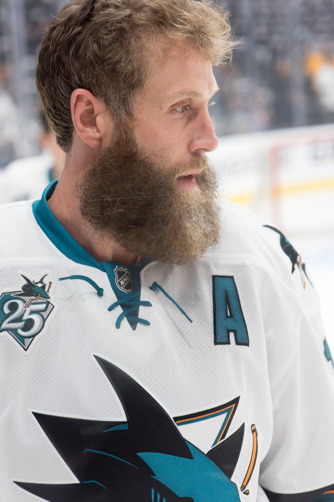
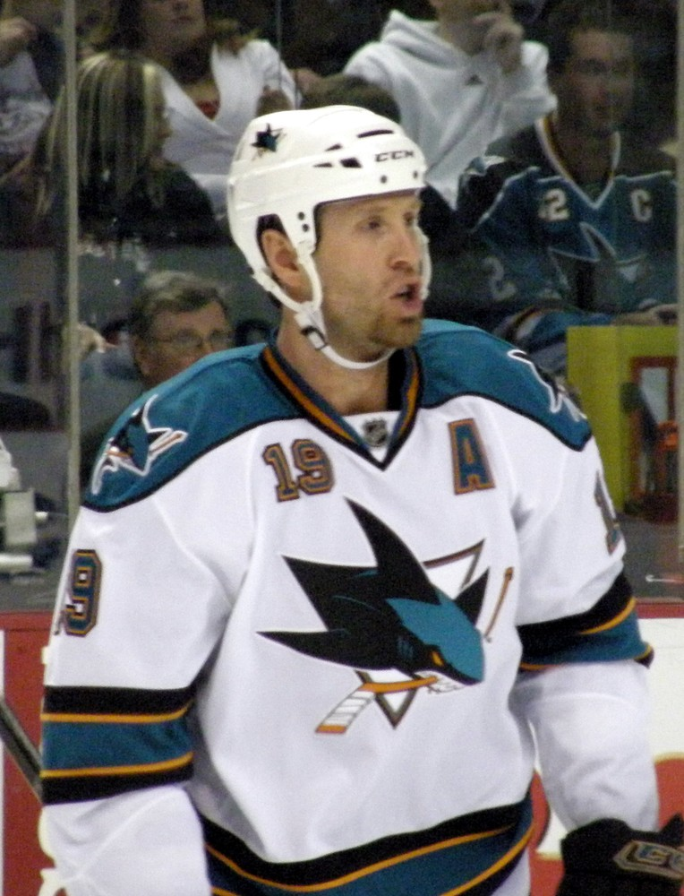
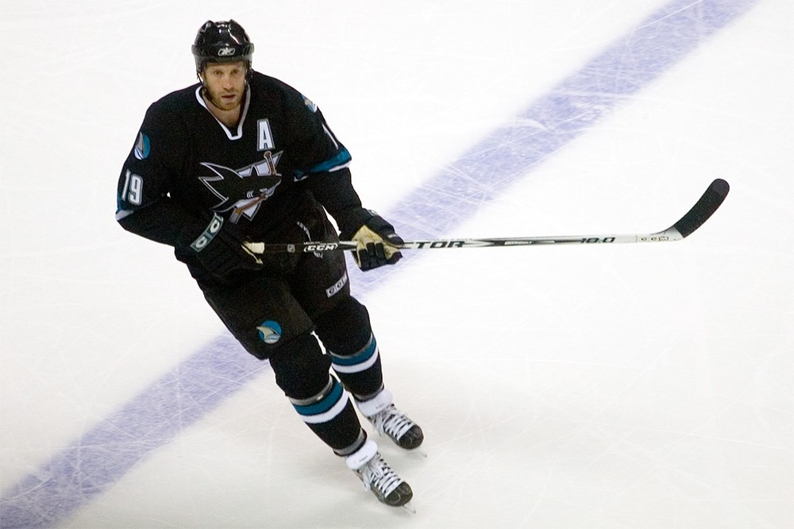
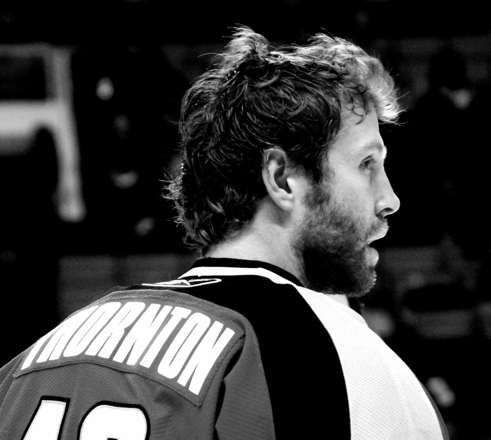

Joe Thornton
The trade that turned us into a contender, the best passer we've ever seen, and a beard that became a Bay Area landmark.
The Joe Thornton Story
On November 30, 2005, the Sharks sent Marco Sturm, Wayne Primeau and Brad Stuart to Boston for Joe Thornton. Two days later, in Buffalo, he hit the post on his first shift in teal and finished with two assists in a 5 to 0 win. That was the start of fifteen seasons that changed what it meant to be a hockey fan around here.
He was born in London, Ontario, on July 2, 1979, and grew up in St. Thomas, a farm town where Jumbo the circus elephant had died. He was a big kid, and the nickname stuck. He piled up 104 points in 50 games for the Junior B St. Thomas Stars at 15, then had 122 points in his second season with the Sault Ste. Marie Greyhounds of the OHL.
Boston took him first overall in the 1997 draft. Pat Burns mostly kept him on the fourth line as a rookie, and he scored 3 goals in 55 games. He grew into a star anyway. He spent seven seasons in Boston, three of them as captain, and broke 100 points for the first time in 2002/03 with 36 goals and 65 assists. During the lockout he played in Switzerland for HC Davos, won the league title and met his wife, Tabea.
Then came the trade, and the season nobody had ever seen before. He had 33 points in 24 games for Boston, then 92 points in 58 games for us. He finished with 29 goals, a league leading 96 assists and 125 points, and won both the Art Ross Trophy and the Hart Trophy. He's still the only player in NHL history to win either award in a season split between two teams, and the only Shark to win either one. Jonathan Cheechoo, riding on his wing, scored 56 goals and won the Rocket Richard.
He kept going. In 2006/07 he had 114 points and another league leading 92 assists, joining Wayne Gretzky and Mario Lemieux as the only players with back to back 90 assist seasons. He led the league in assists three straight years. In 2008/09 he captained the West at the All Star Game and the Sharks won the Presidents' Trophy. That July he became an American citizen at a ceremony in Campbell.
In 2009/10 he centered Patrick Marleau and Dany Heatley, and all three finished in the top 15 in league scoring. The same three played on a line for Canada at the 2010 Olympics in Vancouver, and Thornton came home with a gold medal. That spring he had a career high 12 playoff points as the Sharks reached the Western Conference Final.
On October 7, 2010, he was named the eighth captain in Sharks history. He scored his 1,000th career point on April 8, 2011, against Phoenix. In the playoffs that spring he scored the series winner in overtime of Game 6 in Los Angeles, then played the conference final against Vancouver with a broken finger and a separated shoulder. He finished that run with 17 points in 18 games.
The low point came in 2014, when we blew a three games to none lead to the Kings in the first round. That August he was stripped of the captaincy. He answered with 82 points in 2015/16, made the NHL Second All Star Team and led us to the first Stanley Cup Final in franchise history. He had 21 points in 24 playoff games, 18 of them assists, before Pittsburgh beat us in six.
On March 6, 2017, against Winnipeg, he picked up his 1,000th career assist on a Joe Pavelski goal, the 13th player ever to get there. He tore his ACL and MCL in January 2018, came back, scored his 400th goal on November 13, 2018, passed Gordie Howe for ninth on the career assists list that February and helped us to another conference final in 2019. His 1,500th point came on February 4, 2020.
He chased a Cup with Toronto in 2020/21, wearing number 97 because Jason Spezza had 19, and with Florida in 2021/22. He announced his retirement on October 28, 2023. He finished with 430 goals, 1,109 assists and 1,539 points in 1,714 regular season games, sixth all time in games, seventh in assists and 12th in points.
As a Shark he played 1,104 games and had 251 goals, 804 assists and 1,055 points. The assists are a franchise record and the points are second only to Marleau. On November 23, 2024, San Jose declared Joe Thornton Day, and the Sharks raised his number 19 next to Marleau's 12. On June 24, 2025, he was voted into the Hockey Hall of Fame in his first year of eligibility, and he was inducted that November in Toronto.
He never left. He still lives here, and when Macklin Celebrini showed up as the first overall pick in 2024, he moved into Thornton's house.
What He Meant to Us
I remember exactly where I was when the trade went through. I didn't believe it. Joe Thornton, the best young center in hockey, for three guys? Then he went to Buffalo, hit the post on his first shift and set up two goals, and I knew Boston had just handed us something they were going to regret for twenty years.
What he did in that first half season still doesn't make sense to me. Ninety two points in 58 games. Cheechoo, who had been a nice little player, scored 56 because Joe kept putting the puck right on his stick. People talk about passers. I watched a guy make the whole building lean forward every time he had it behind the net.
Yeah, the playoffs hurt. All of them. 2014 still makes me sick, and I'm not going to pretend otherwise. But he played a conference final with a separated shoulder and a broken finger, and when we finally got to the Final in 2016, he was the reason. That beard was the most Bay Area thing that ever happened in hockey.
And he chose us. He became an American citizen in Campbell, he stayed here after he retired, and he put a teenage Celebrini up in his own house. When he walked out in that top hat and yelled for San Jose to give him that love, I lost it. Number 19 belongs up there next to 12. Forever.
In Pictures



Why He Was Clutch
The rap on Thornton was the playoffs, and I get why people said it. But look at what he actually did when the season was on the line. In Game 2 against Detroit in 2010, with the game tied in the third, he scored the winner at 12:37. A year later in Los Angeles, Game 6, overtime, he ended the series himself.
He also played hurt when it mattered most. In the 2011 conference final he was out there with a broken finger from a March slash and a shoulder separated in Game 4, and nobody knew until we were already eliminated. He still finished that spring with 17 points in 18 games, a career high at the time.
And when we finally got over the hump in 2016, he was the engine. Twenty one points in 24 games, 18 assists, second in the whole playoffs. He set up three goals in Game 5 against St. Louis, a 6 to 3 win that put us one game from the Final. That's clutch to me. It just looked different, because his best plays ended up on somebody else's stick.
Clutch Moments
- December 2, 2005
First night in teal
Two days after the trade, Thornton made his Sharks debut in Buffalo. He hit the post on his very first shift, then set up two goals in a 5 to 0 win. He went on to score 92 points in 58 games for us and win the Art Ross and the Hart.
- May 2, 2010
Game 2 winner against Detroit
Detroit had taken the lead in the second period of Game 2 of the 2010 West semifinal at the Tank. The Sharks tied it, and Thornton scored the winner at 12:37 of the third. We went on to beat the Red Wings in five games.
- April 25, 2011
Overtime of Game 6 in Los Angeles
Up three games to two on the Kings, the Sharks went to overtime in Game 6 at Staples Center. Thornton scored the winner to end the series, the only playoff overtime goal of his career, and finished the night with a goal and an assist.
- May 23, 2016
Three assists to put us one win from the Final
With the West final tied two games each against St. Louis, Thornton set up three goals in a 6 to 3 win on the road. Two nights later the Sharks closed out the Blues at home and reached the Stanley Cup Final for the first time in franchise history. Thornton finished the playoffs with 21 points.
- March 6, 2017
Assist number 1,000
Against Winnipeg, Thornton set up a Joe Pavelski goal for his 1,000th career assist. He was the 13th player in NHL history to reach it, and he went on to finish seventh all time with 1,109.
- November 23, 2024
Number 19 goes up next to 12
In a top hat and a sparkling suit, Thornton walked out through the Shark head at SAP Center, yelled for San Jose to give him that love and watched his number 19 rise to the rafters beside Patrick Marleau's 12. The city declared it Joe Thornton Day.
- November 2025
The Hockey Hall of Fame
Voted in on June 24, 2025, in his first year of eligibility, Thornton was inducted in Toronto that November.
The Highlights
What They Said About Thornton
“When I was traded to San Jose I knew I liked the Sharks logo but I wasn't sure how I'd look in teal.”
“I never thought I'd live in California. Honestly, it was just a dream.”
“Holy doodle. Holy doodle. Holy doodle, boys. Oh my God. I'm shaking.”
“As long as I can remember, my year consisted of going from road hockey right to the backyard rink.”
“Winning the gold medal in Vancouver in 2010 was truly electric.”
“He's just so positive, so upbeat.”
Career Stats
| Year | Team | GP | G | A | Pts | +/- | PIM | PPG | GWG |
|---|---|---|---|---|---|---|---|---|---|
| 1997/98 | BOS | 55 | 3 | 4 | 7 | -6 | 19 | 0 | 1 |
| 1998/99 | BOS | 81 | 16 | 25 | 41 | +3 | 69 | 7 | 1 |
| 1999/00 | BOS | 81 | 23 | 37 | 60 | -5 | 82 | 5 | 3 |
| 2000/01 | BOS | 72 | 37 | 34 | 71 | -4 | 107 | 19 | 5 |
| 2001/02 | BOS | 66 | 22 | 46 | 68 | +7 | 127 | 6 | 5 |
| 2002/03 | BOS | 77 | 36 | 65 | 101 | +12 | 109 | 12 | 4 |
| 2003/04 | BOS | 77 | 23 | 50 | 73 | +18 | 98 | 4 | 6 |
| 2005/06 | BOS | 23 | 9 | 24 | 33 | 0 | 6 | 3 | 2 |
| 2005/06 | SJS | 58 | 20 | 72 | 92 | +31 | 55 | 8 | 4 |
| 2006/07 | SJS | 82 | 22 | 92 | 114 | +24 | 44 | 10 | 5 |
| 2007/08 | SJS | 82 | 29 | 67 | 96 | +18 | 59 | 11 | 5 |
| 2008/09 | SJS | 82 | 25 | 61 | 86 | +16 | 56 | 11 | 3 |
| 2009/10 | SJS | 79 | 20 | 69 | 89 | +17 | 54 | 4 | 2 |
| 2010/11 | SJS | 80 | 21 | 49 | 70 | +4 | 47 | 9 | 3 |
| 2011/12 | SJS | 82 | 18 | 59 | 77 | +17 | 31 | 4 | 2 |
| 2012/13 | SJS | 48 | 7 | 33 | 40 | +6 | 26 | 2 | 1 |
| 2013/14 | SJS | 82 | 11 | 65 | 76 | +20 | 32 | 2 | 3 |
| 2014/15 | SJS | 78 | 16 | 49 | 65 | -4 | 30 | 4 | 0 |
| 2015/16 | SJS | 82 | 19 | 63 | 82 | +25 | 54 | 8 | 6 |
| 2016/17 | SJS | 79 | 7 | 43 | 50 | +7 | 51 | 1 | 0 |
| 2017/18 | SJS | 47 | 13 | 23 | 36 | -9 | 38 | 7 | 1 |
| 2018/19 | SJS | 73 | 16 | 35 | 51 | +8 | 20 | 3 | 4 |
| 2019/20 | SJS | 70 | 7 | 24 | 31 | -19 | 34 | 3 | 1 |
| 2020/21 | TOR | 44 | 5 | 15 | 20 | +6 | 14 | 0 | 0 |
| 2021/22 | FLA | 34 | 5 | 5 | 10 | -10 | 10 | 3 | 1 |
| Career | 1,714 | 430 | 1,109 | 1,539 | +182 | 1,272 | 146 | 68 |
No 2004/05 season because of the NHL lockout; he played in Switzerland for HC Davos. He split 2005/06 between Boston and San Jose and led the league with 125 points. Scroll the table sideways on a phone.
Playoffs
| Year | Team | GP | G | A | Pts | +/- | PIM | PPG | GWG |
|---|---|---|---|---|---|---|---|---|---|
| 1997/98 | BOS | 6 | 0 | 0 | 0 | 0 | 9 | 0 | 0 |
| 1998/99 | BOS | 11 | 3 | 6 | 9 | +1 | 4 | 2 | 2 |
| 2001/02 | BOS | 6 | 2 | 4 | 6 | 0 | 10 | 0 | 0 |
| 2002/03 | BOS | 5 | 1 | 2 | 3 | -5 | 4 | 1 | 0 |
| 2003/04 | BOS | 7 | 0 | 0 | 0 | -6 | 14 | 0 | 0 |
| 2005/06 | SJS | 11 | 2 | 7 | 9 | -4 | 12 | 1 | 1 |
| 2006/07 | SJS | 11 | 1 | 10 | 11 | +2 | 10 | 0 | 0 |
| 2007/08 | SJS | 13 | 2 | 8 | 10 | +3 | 2 | 1 | 1 |
| 2008/09 | SJS | 6 | 1 | 4 | 5 | -3 | 5 | 1 | 0 |
| 2009/10 | SJS | 15 | 3 | 9 | 12 | -11 | 18 | 1 | 1 |
| 2010/11 | SJS | 18 | 3 | 14 | 17 | -5 | 16 | 0 | 2 |
| 2011/12 | SJS | 5 | 2 | 3 | 5 | +2 | 2 | 0 | 0 |
| 2012/13 | SJS | 11 | 2 | 8 | 10 | +5 | 2 | 1 | 0 |
| 2013/14 | SJS | 7 | 2 | 1 | 3 | -6 | 8 | 1 | 0 |
| 2015/16 | SJS | 24 | 3 | 18 | 21 | +2 | 10 | 1 | 1 |
| 2016/17 | SJS | 4 | 0 | 2 | 2 | -1 | 0 | 0 | 0 |
| 2018/19 | SJS | 19 | 4 | 6 | 10 | -6 | 6 | 0 | 0 |
| 2020/21 | TOR | 7 | 1 | 0 | 1 | -3 | 2 | 1 | 0 |
| 2021/22 | FLA | 1 | 0 | 0 | 0 | -1 | 0 | 0 | 0 |
| Career | 187 | 32 | 102 | 134 | -36 | 134 | 11 | 8 |